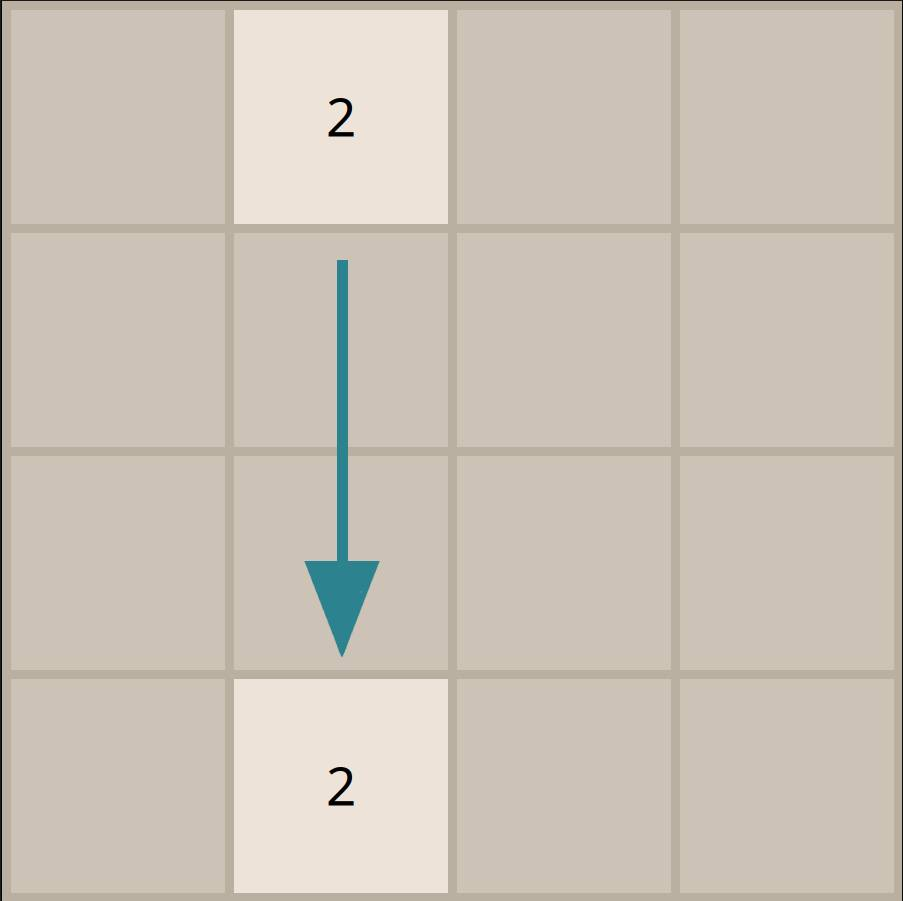
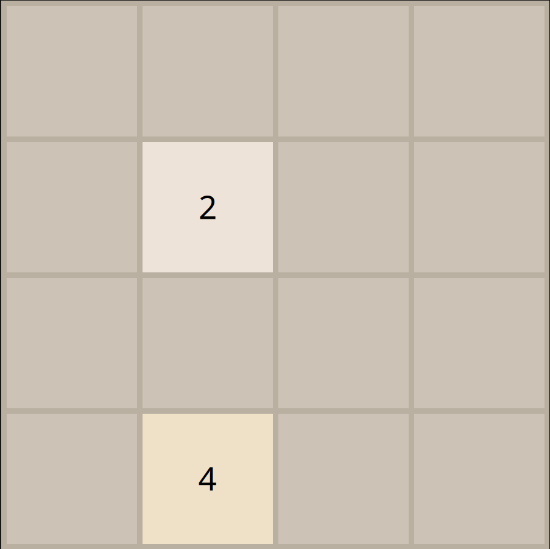
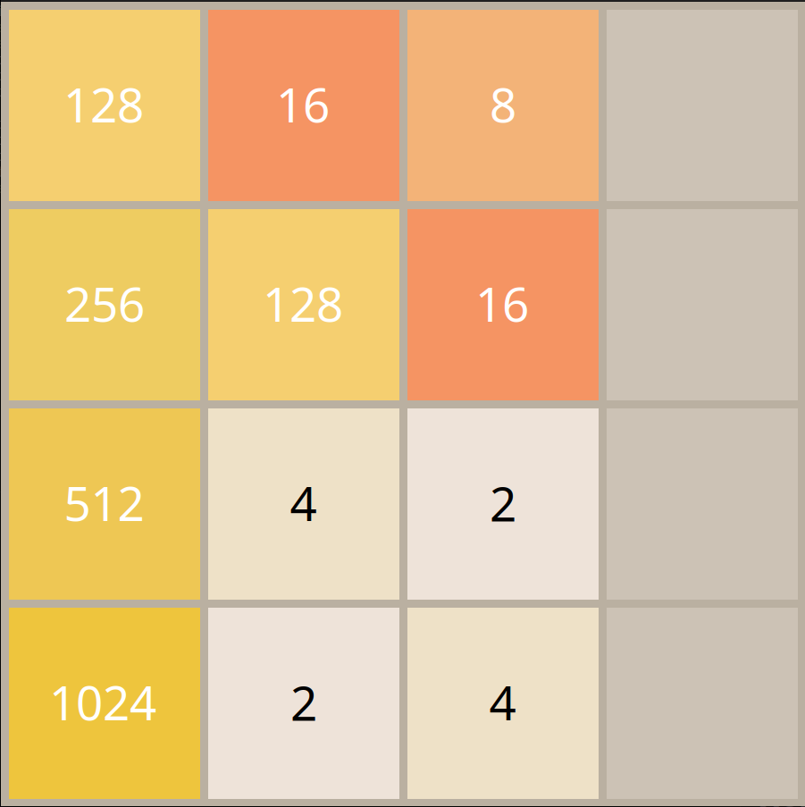
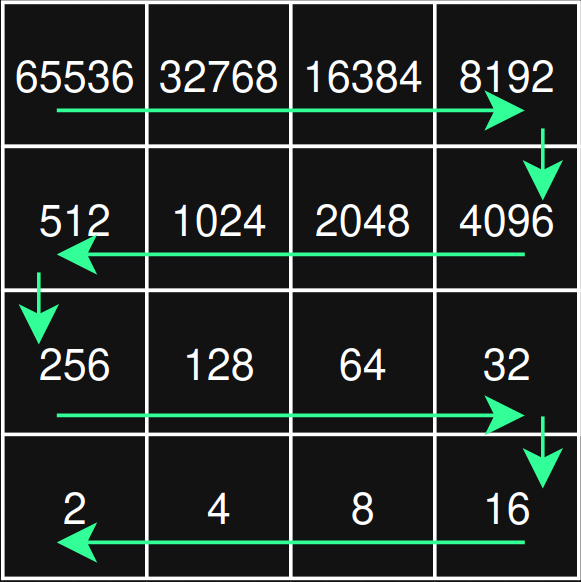

En bref
My2048 est né d'une envie simple : reconstruire de zéro le célèbre jeu 2048 pour ensuite m'attaquer à un objectif plus ambitieux — implémenter un bot capable de jouer tout seul et surtout de bien jouer.
Cette idée m'est venue car j'aimais beaucoup jouer à ce jeu et je voulais voir si j'avais les conaissances nécessaires pour faire aboutir ce projet et surtout apprendre de nouvelle chose.
Le projet se découpe en deux parties : le jeu (logique + interface graphique) et l'"intelligence artificielle" qui s'appuie sur l'algorithme Expectimax.
Le jeu
L'implémentation du jeu a été très plaisante à réalisé. J'ai donc essayé de le créer de manière la plus fidèle qu'il soit en gardant évidemment les mêmes mécaniques mais égallement d'un point de vue visuel.
Pour ceux qui ne connaissent pas ce jeu, l'objectif est de créer des nombres les plus grands possible.
Pour ce faire, nous pouvons nous déplacer dans 4 directions (haut, bas, gauche et droite). Apres chaque mouvement, un nouveau chiffre apparaît entre 2 et 4 (90% de chance que ce soit un 2 et 10% que ce soit un 4).
Pour faire grandir les nombres, nous devons fusionner deux nombres en les écrasant l'un sur l'autre grâce aux 4 mouvements disponibles.


Sur ses exemples ci-dessus, on peut voir qu'en effectuant le mouvement pour descendre, les deux bloc ayant pour valeur 2 ont fusionnés pour devenir un 4. On a donc ensuite l'apparition d'un nouveau bloc.

Une dernière subtilité est le fait que les déplacements soient disponibles ou non. Dans le cas ci-dessus, le seul déplacement valide est vers la droite car sur les 3 autres directions aucuns blocs ne va bouger.
La partie s'arrête lorsque plus aucun déplacement n'est possible. L'objectif le plus répandu est 2048, mais rien ne vous oblige de vous arrêter là.
Maintenant que 2048 n'a plus de secret pour vous, nous allons passer à l'explication du fonctionnement de notre futur champion.
Comment marche le bot ?
2048 mélange deux phénomènes — d'un côté nos décisions (les 4 déplacements, totalement maîtrisés), de l'autre le hasard (après chaque coup, une tuile apparaît : un 2 dans 90 % des cas, un 4 dans 10 %). C'est ce mélange qui guide le choix de l'algorithme.
L'algorithme Expectimax
L'algorithme Expectimax est une variante du Minimax adaptée au hasard : là où le Minimax suppose un adversaire qui joue toujours le pire coup contre nous, Expectimax remplace cet adversaire par l'espérance sur les événements aléatoires. On explore un arbre des coups possibles dans lequel alternent deux types de nœuds :
- Nœuds MAX — c'est le bot qui joue. Il essaie les 4 déplacements (ceux qui ne bougent aucune tuile sont écartés) et garde celui qui mène à la meilleure situation.
- Nœuds CHANCE — ici c'est le hasard qui place une tuile. On ne choisit pas : pour chaque case vide, on envisage l'apparition d'un 2 et celle d'un 4, et on combine les résultats pondérés par leur probabilité (0,9 pour un 2, 0,1 pour un 4). C'est l'espérance de la position.
La fonction d'évaluation (heuristique)
On ne peut pas explorer l'arbre jusqu'à la fin de la partie : le nombre de positions explose. On s'arrête donc à une profondeur fixée et on attribue une note à chaque position grâce à une heuristique — c'est elle qui encode « ce qu'est une bonne position ».
Mon heuristique récompense une idée classique au 2048 : garder les grosses tuiles rangées en serpentin vers un coin, pour pouvoir fusionner sans se bloquer. Concrètement, je définis quatre matrices de poids — une par coin (bas-gauche, bas-droite, haut-droite, haut-gauche). Chaque matrice attribue un poids croissant aux cases en suivant un serpentin qui converge vers son coin.

Pour noter une position, je calcule le produit scalaire entre le plateau et chaque matrice (haut gauche, haut droite, bas gauche et bas droite). Cela permet de favoriser une sorte de serpent avec comme plus rgrande valeur dans le coin et qu'en suivant ce serpent, les valeurs décroisse. On vise donc une position optimale du plateau. Puis je garde le meilleur des quatre résultats. Le bot n'est donc pas enfermé dans un seul coin : il adopte l'orientation qui valorise le mieux sa position courante.
Profondeur & performance
La profondeur de recherche est fixée à 4 (constante
MAX_DEPTH, modifiable dans src/bot.c) : le bot envisage
les 4 prochains coups ainsi que toutes les apparitions de tuiles intermédiaires.
Le nombre de scénarios grimpe très vite avec la profondeur. Pour rester rapide, j'évalue les 4 directions en parallèle, chacune dans son propre thread. Une fois les 4 scores obtenus, on selectionne la direction ayany meilleur score.
Résultats
En pratique, plus la profondeur est élevée, meilleur est le jeu — au prix du temps de calcul. Actuellement le bot n'arrive pas à tous les coups à 2048 et je sais qu'il reste une certaine marge de progression.
Démonstration
Le bot en action :
On voit ici que le bot préfère quelque fois écarter le carré le avec la plus grosse valeure du bord. Ce choix indique donc un problème dans notre calcul d'heuristique.
Ce que j'en retiens
Conclus :
J'ai donc appris comment fonctionne l'algorithme Expectimax et découvert comment faire une interface graphique plutôt simple.
J'ai pris beaucoup de plaisir à faire ce projet et j'en suis très fier.
Axes d'améliorations
Afin d'améliorer ce projet, la prochaine étape à réaliser serait de corriger ce calcul d'heuristique et d'optimiser le code afin que le calcul du meilleur déplacement à faire soit plus rapide.